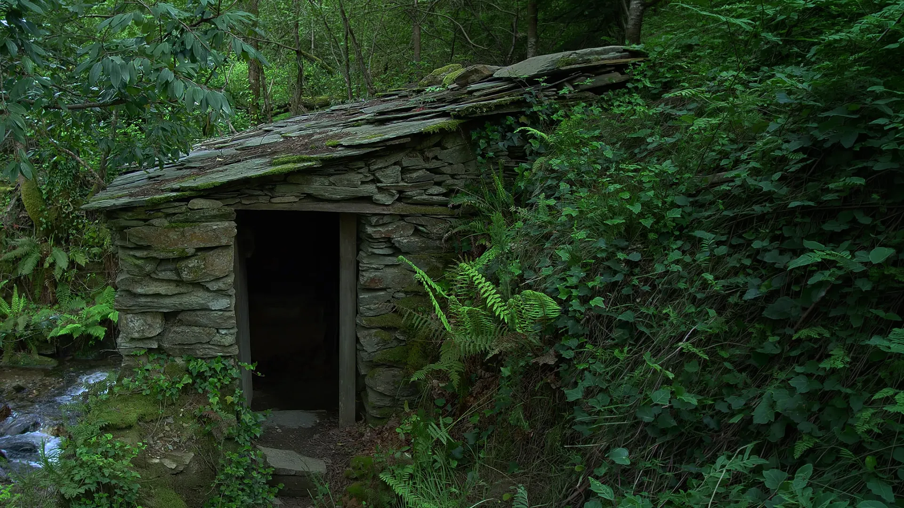

História
Na serra entre pinhais e vales correm, apertadas, inúmeras ribeiras e no seu percurso sinuoso encontram-se ainda levadas de rega, algumas azenhas e moinhos em funcionamento.

Na serra entre pinhais e vales correm, apertadas, inúmeras ribeiras e no seu percurso sinuoso encontram-se ainda levadas de rega, algumas azenhas e moinhos em funcionamento.